第十三课：XIAO ESP32S3 数字音频系统——I2S、PCM、DMA 与 DSP
前面我们学习了 ADC、GPTimer、DMA、环形缓冲区和数字滤波。
现在进入 XIAO ESP32S3 非常重要的一个应用领域：数字音频开发。
这节课我们将从数字音频的硬件原理开始，一直讲到实际录音、音频播放、数字信号处理和 Wi-Fi 音频传输。
本课全部以普通版 Seeed XIAO ESP32S3 为基础，外接音频模块，不依赖 Sense 版本的板载摄像头或麦克风。
一、先建立完整的音频系统概念
一套完整的数字音频设备通常有两条数据链路。
音频播放链路
先记住一个概念：
- I2S：负责数字音频数据传输。
- PCM：负责表示数字音频采样数据。
- DMA：负责数据搬运。
- DSP：负责数字音频处理。
- 功放：负责驱动扬声器。
这几个模块组合起来，才能构成完整的音频系统。
二、声音是如何变成数字数据的？
首先理解声音本身。
声音是一种机械波。
麦克风接收到声波后，将其转换成电信号。
数字麦克风内部通常已经集成了模数转换功能。
模拟麦克风则输出模拟电压，需要外部 ADC 或音频编解码器进行转换。
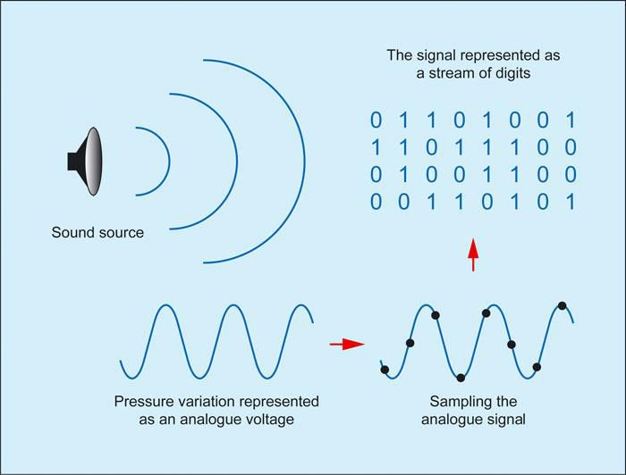
1. 什么是采样？
假设麦克风输出连续变化的信号：
数字系统不能无限连续地保存它，所以需要按照固定时间间隔读取信号。
例如每秒采样 16000 次：
采样间隔：
约为 62.5 微秒。
也就是说，每隔 62.5 微秒记录一次声音幅度。
2. 什么是采样率？
| 采样率 | 每秒采样次数 | 常见用途 |
|---|---|---|
| 8kHz | 8000 | 窄带语音 |
| 16kHz | 16000 | 语音识别 |
| 22.05kHz | 22050 | 音频处理 |
| 44.1kHz | 44100 | 常见音乐音频 |
| 48kHz | 48000 | 数字音频、视频 |
采样率越高，意味着每秒需要处理的数据越多。
但采样率并不是越高越好，需要结合目标信号的频率范围和系统处理能力选择。
3. 奈奎斯特采样定理
这是数字音频必须理解的理论。
如果需要正确表示最高频率为 的带限信号，理想情况下采样率至少应满足：例如希望处理最高频率为 8kHz 的信号：
实际系统还需要抗混叠滤波，不能仅仅把采样率设置成两倍就认为可以得到高质量音频。
4. 什么是量化位数？
采样得到的是一个幅度值，还需要将幅度转换成数字。
例如：
| 位数 | 可表示等级 |
|---|---|
| 8bit | 256 |
| 16bit | 65536 |
| 24bit | 16777216 |
| 32bit | 4294967296 |
这里要注意：
32bit PCM 不一定代表 32 位有效音频精度。有些 I2S 设备使用 32 位数据槽，但实际有效数据只有 18、24 或其他位数。
三、PCM：数字音频的数据格式
PCM 全称 Pulse Code Modulation，即脉冲编码调制。
它是最基础的数字音频表示形式之一。
例如一段音频：
[100]
[250]
[400]
[350]
[120]
[-100]
[-300]
[-200]这些数字就是不同时间点的音频采样值。
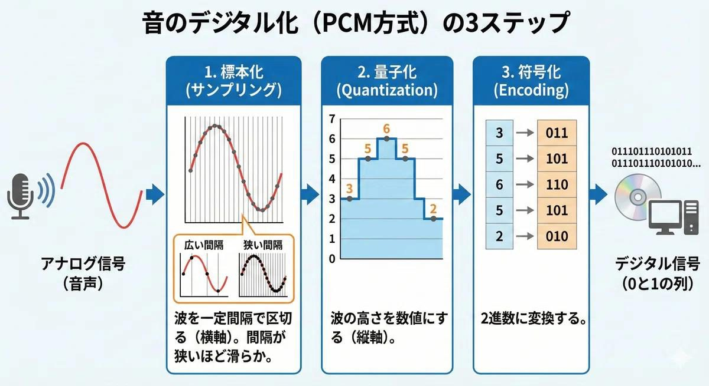
1. PCM 数据的三个关键参数
| 参数 | 说明 |
|---|---|
| Sample Rate | 采样率 |
| Bit Depth | 采样数据位数 |
| Channels | 声道数量 |
例如：
16000Hz
16bit
Mono代表：
- 每秒 16000 个采样；
- 每个采样 16 位；
- 单声道。
2. 如何计算 PCM 数据量？
公式：
例如：
16kHz、16bit、单声道：
转换成字节：
即：
32KB/s
如果是 16kHz、16bit、双声道：
即 64KB/s。
3. 不同音频配置的数据量
| 音频格式 | 每秒数据量 |
|---|---|
| 8kHz / 16bit / Mono | 16KB |
| 16kHz / 16bit / Mono | 32KB |
| 16kHz / 16bit / Stereo | 64KB |
| 44.1kHz / 16bit / Stereo | 176.4KB |
| 48kHz / 32bit / Stereo | 384KB |
这对 XIAO ESP32S3 的内存规划非常重要。
例如采集 10 秒 16kHz、16bit、单声道音频：
大约需要 312.5KiB。
所以不能把长时间录音的数据全部放在普通任务栈里。
四、I2S：ESP32-S3 如何与数字麦克风通信？
I2S 全称 Inter-IC Sound。
它是专门为数字音频数据传输设计的串行接口。
与 UART、I2C 不同，I2S 主要用于连续音频数据流。
1. I2S 的主要信号
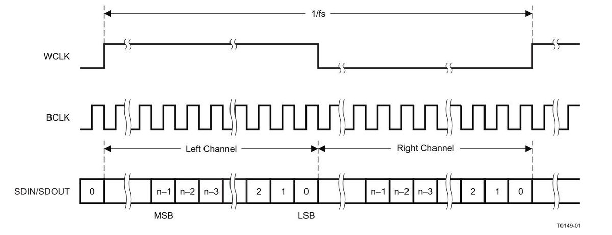
| 信号 | 作用 |
|---|---|
| BCLK | 位时钟 |
| WS / LRCLK | 左右声道选择时钟 |
| DIN | 数据输入 |
| DOUT | 数据输出 |
| MCLK | 主时钟，部分设备需要 |
其中：
- BCLK 控制每一位数据的传输节奏。
- WS 表示当前传输的是左声道还是右声道。
- DIN/DOUT 负责实际音频数据。
2. I2S 主机和从机
在常见的 ESP32-S3 音频系统中：
ESP32-S3 可以作为 I2S 主机。
由它产生：
- BCLK；
- WS。
数字麦克风接收时钟，然后把数据发送给 ESP32-S3。
XIAO ESP32S3
|
├── BCLK ───→ 数字麦克风
|
├── WS ─────→ 数字麦克风
|
└── DIN ←──── 数字麦克风数据播放时则可以把方向反过来：
XIAO ESP32S3
|
├── BCLK ───→ 数字功放
|
├── WS ─────→ 数字功放
|
└── DOUT ───→ 数字功放3. I2S 为什么需要 DMA？
假设：
16kHz
16bit
单声道每秒就有 32000 字节音频数据。
如果 CPU 每个采样都单独处理，就会产生大量数据搬运工作。
I2S + DMA 可以实现：
数字麦克风
↓
I2S 接收
↓
DMA 缓冲区
↓
FreeRTOS 音频任务
↓
PCM 数据处理CPU 可以按块读取数据，而不是逐个采样搬运。
五、I2S 实际硬件：选择数字麦克风和数字功放
现在把理论落实到普通版 XIAO ESP32S3。
建议第一套音频实验使用两个模块：
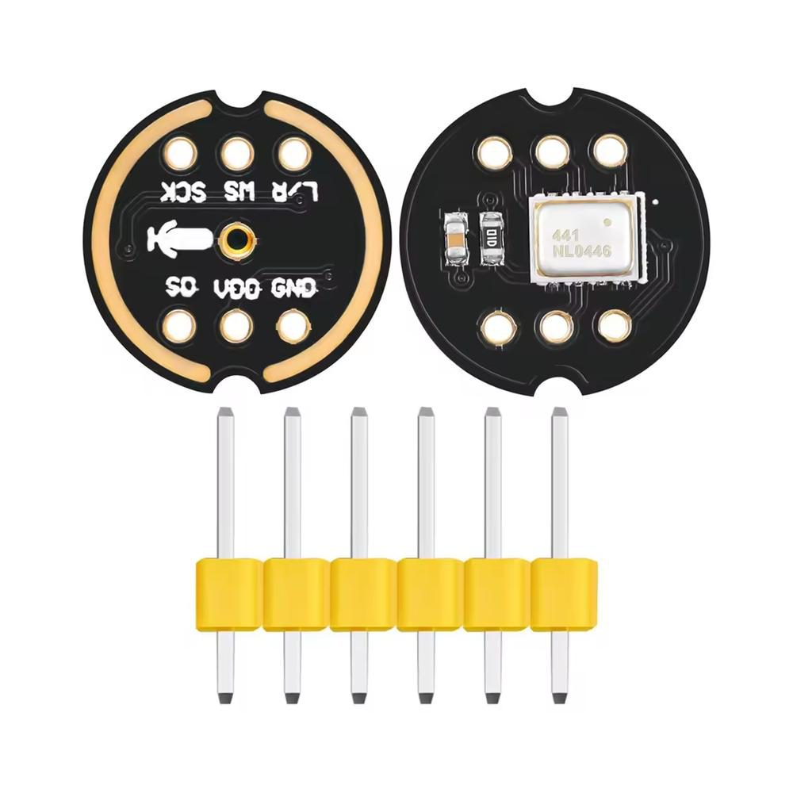
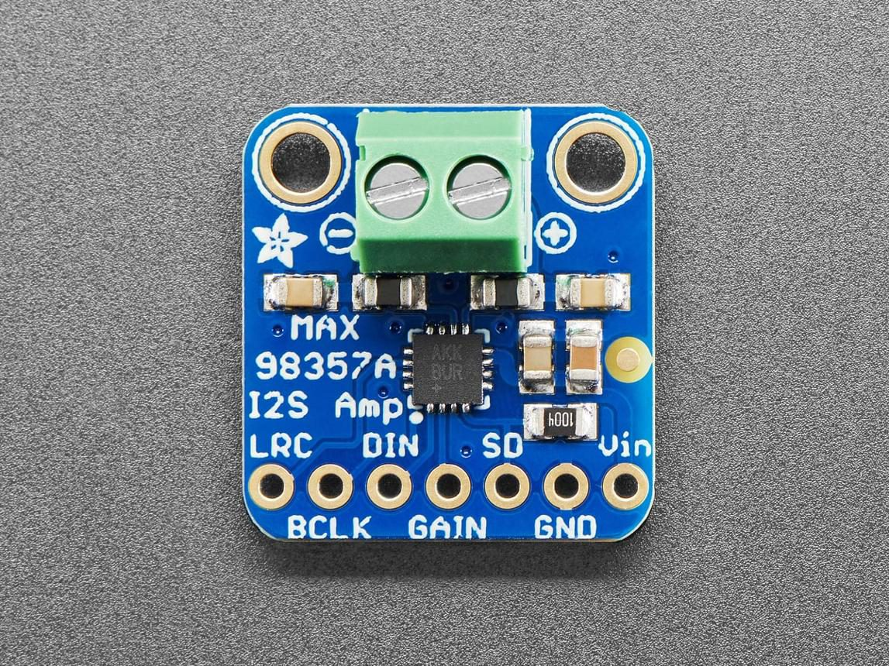
这两个模块可以构成一套基础的录音和播放系统。
1. INMP441 麦克风接线
INMP441 常见引脚：
| 麦克风引脚 | XIAO ESP32S3 示例连接 |
|---|---|
| VDD | 3V3 |
| GND | GND |
| SCK | D0 / GPIO1 |
| WS | D1 / GPIO2 |
| SD | D2 / GPIO3 |
| L/R | GND（选择左声道，具体依模块说明） |
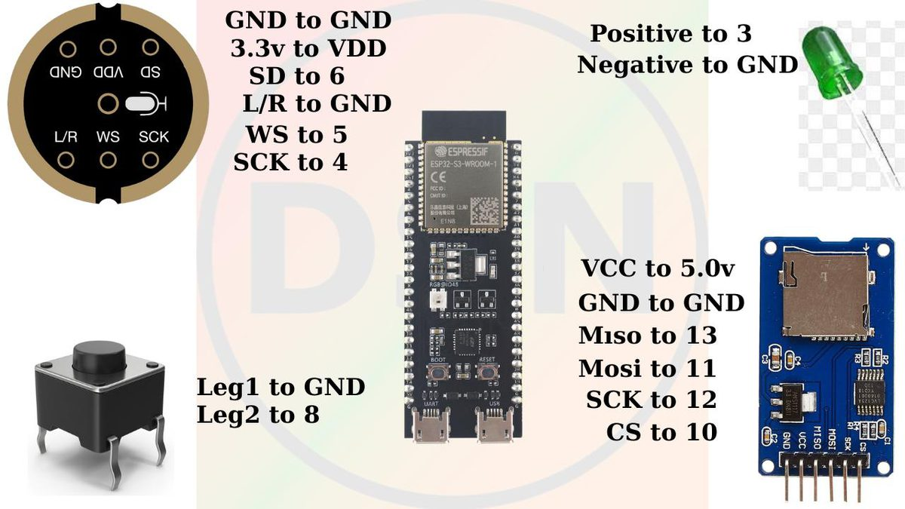
说明：
- SCK 对应 I2S BCLK。
- WS 对应 I2S WS。
- SD 对应 ESP32-S3 的 DIN。
- L/R 用于选择麦克风输出的声道位置。
INMP441 通常在 32 位 I2S 数据槽中提供有效音频数据。不能简单认为每个槽里的 32 位都是 32 位有效音频。
2. MAX98357A 功放接线
| MAX98357A | XIAO ESP32S3 示例连接 |
|---|---|
| VIN | 按模块规格接电源 |
| GND | GND |
| BCLK | D0 / GPIO1 |
| LRC | D1 / GPIO2 |
| DIN | D3 / GPIO4 |
| SD / MODE | 按模块要求配置 |
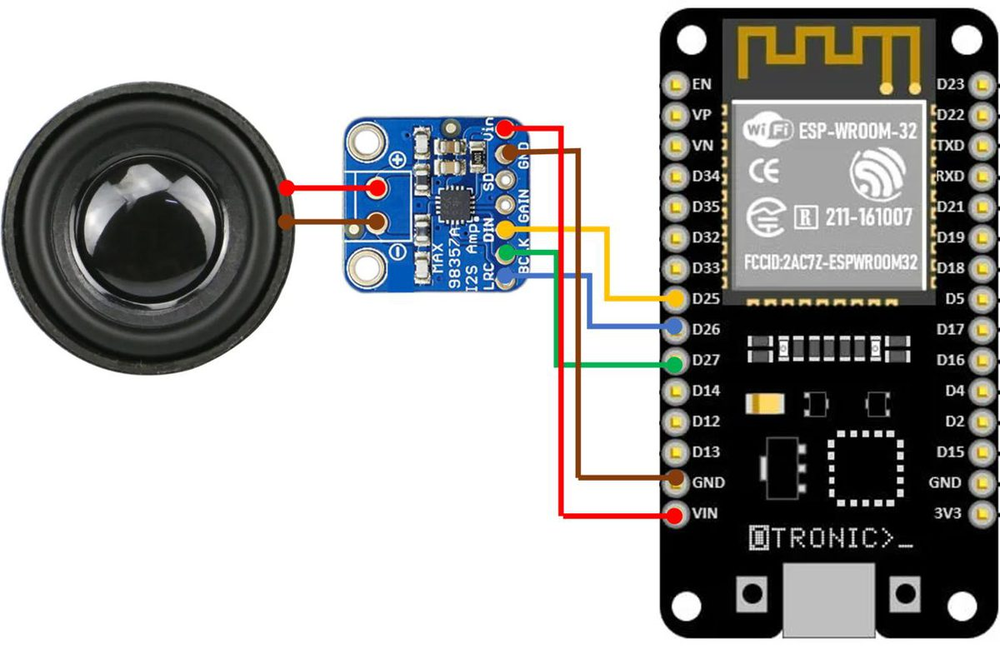
注意：
- MAX98357A 的扬声器输出是桥接功放输出，不能将扬声器负端直接接 GND。
- 扬声器应该连接功放的 OUT+ 和 OUT−。
- 功放供电电压按照具体模块规格确定。
- 麦克风和功放需要共地。
- 如果同时连接采集和播放，两个设备可以共享 BCLK、WS 时钟，但需要合理设计 I2S 全双工通道及声道配置。
以上 GPIO 是实验规划示例。真正接线前必须确认没有与现有板载电路、USB、其他外设冲突。不要把普通版和 Sense 版的引脚定义混用。
六、ESP-IDF I2S 驱动：建立数字麦克风采集程序
现在进入实际代码。
ESP-IDF 5.x 使用新版 I2S Channel API。
主要头文件：
#include "driver/i2s_std.h"
#include "driver/i2s_common.h"1. 初始化 I2S 接收通道
下面以：
- 16kHz 采样率；
- 32 位数据槽；
- 单声道；
- Philips I2S 标准格式；
作为实验配置。
#include "driver/i2s_std.h"
#include "esp_err.h"
#define I2S_PORT I2S_NUM_0
#define I2S_BCLK GPIO_NUM_1
#define I2S_WS GPIO_NUM_2
#define I2S_DIN GPIO_NUM_3
static i2s_chan_handle_t rx_handle;
void audio_input_init(void)
{
i2s_chan_config_t chan_config =
I2S_CHANNEL_DEFAULT_CONFIG(
I2S_PORT,
I2S_ROLE_MASTER
);
ESP_ERROR_CHECK(
i2s_new_channel(
&chan_config,
NULL,
&rx_handle
)
);
i2s_std_config_t std_config = {
.clk_cfg =
I2S_STD_CLK_DEFAULT_CONFIG(16000),
.slot_cfg =
I2S_STD_PHILIPS_SLOT_DEFAULT_CONFIG(
I2S_DATA_BIT_WIDTH_32BIT,
I2S_SLOT_MODE_MONO
),
.gpio_cfg = {
.mclk = I2S_GPIO_UNUSED,
.bclk = I2S_BCLK,
.ws = I2S_WS,
.dout = I2S_GPIO_UNUSED,
.din = I2S_DIN,
.invert_flags = {
.mclk_inv = false,
.bclk_inv = false,
.ws_inv = false
}
}
};
ESP_ERROR_CHECK(
i2s_channel_init_std_mode(
rx_handle,
&std_config
)
);
ESP_ERROR_CHECK(
i2s_channel_enable(rx_handle)
);
}这里有几个重要概念：
| 配置 | 含义 |
|---|---|
I2S_ROLE_MASTER | ESP32-S3 产生时钟 |
16000 | 采样率 |
32BIT | 每个数据槽的位宽 |
MONO | 单声道配置 |
din | 接收数字音频数据的 GPIO |
注意：单声道 I2S 的左右声道槽位选择，必须与麦克风的 L/R 配置匹配。部分麦克风虽然只输出一个声道的数据，但总线上仍存在左右声道时隙。若读到全零或数据异常，应优先检查声道槽位，而不是直接认定麦克风损坏。
2. 读取 PCM 数据
#include <stdint.h>
#include <stdio.h>
#define AUDIO_BUFFER_SIZE 1024
static int32_t audio_buffer[AUDIO_BUFFER_SIZE];
void audio_capture_task(void *arg)
{
size_t bytes_read = 0;
while (1) {
esp_err_t ret = i2s_channel_read(
rx_handle,
audio_buffer,
sizeof(audio_buffer),
&bytes_read,
1000
);
if (ret == ESP_OK && bytes_read > 0) {
printf(
"Audio bytes: %u\n",
(unsigned)bytes_read
);
// 后续进行 PCM 数据处理
}
}
}这段代码先实现连续读取。
下一步需要将 I2S 数据槽转换为真正的 PCM 样本。
3. 为什么不能直接把 32 位数据当成 16 位 PCM？
因为麦克风的数据格式可能是：
- 24 位有效数据；
- 左对齐或其他对齐方式；
- 32 位 I2S 数据槽。
例如，实际有效数据可能位于 32 位槽的高 24 位。
因此需要根据 INMP441 数据手册和实际采集结果确定移位和符号扩展方式。
概念示例：
int32_t sample_24bit =
audio_buffer[i] >> 8;
int16_t sample_16bit =
(int16_t)(sample_24bit >> 8);这里仅演示位移处理思路，不能在未确认数据对齐和有效位位置时直接用于最终产品。
调试音频的第一原则：先确认 I2S 时序和原始数据格式，再做 PCM 转换。
七、I2S 音频播放：让 XIAO ESP32S3 发出声音
采集数据只是第一步。
现在我们学习如何播放音频。
播放过程：
PCM 数据
↓
I2S TX
↓
DMA
↓
数字功放
↓
扬声器1. 创建 I2S TX 通道
播放时可以使用 I2S_NUM_0 的 TX 通道，并与 RX 共享时钟资源，具体取决于驱动支持的全双工配置。
例如：
#define I2S_DOUT GPIO_NUM_4
static i2s_chan_handle_t tx_handle;创建全双工通道时，建议在创建阶段同时申请 TX 和 RX：
i2s_chan_handle_t tx_handle;
i2s_chan_handle_t rx_handle;
i2s_chan_config_t chan_config =
I2S_CHANNEL_DEFAULT_CONFIG(
I2S_NUM_0,
I2S_ROLE_MASTER
);
ESP_ERROR_CHECK(
i2s_new_channel(
&chan_config,
&tx_handle,
&rx_handle
)
);之后分别配置 TX 和 RX 的标准模式，并确认两者时钟配置兼容。
2. 播放 PCM 数据
假设我们已经有一段 16 位 PCM 音频：
int16_t pcm_data[1024];播放：
size_t bytes_written = 0;
ESP_ERROR_CHECK(
i2s_channel_write(
tx_handle,
pcm_data,
sizeof(pcm_data),
&bytes_written,
1000
)
);实际使用时，必须保证 TX 的数据槽宽度、声道模式和功放要求相匹配。
例如，功放使用 32 位 I2S 槽，而 PCM 是 16 位，就需要将 16 位样本转换为适当的 32 位槽格式，不能直接假定数据会自动以预期方式对齐。
3. 为什么扬声器不能直接接 GPIO？
因为 GPIO 只能输出数字逻辑信号，不能提供足够的音频功率。
扬声器需要驱动电流。
因此需要：
- DAC 或数字音频功放；
- 功率放大电路；
- 合适的扬声器负载。
MAX98357A 将数字 I2S 音频转换并放大，适合这种场景。
八、DSP：让声音变得更清晰
现在我们已经可以采集 PCM，也可以播放 PCM。
但原始声音通常需要处理。
DSP 是 Digital Signal Processing，即数字信号处理。
1. 音频增益 Gain
例如麦克风采集的声音太小，可以通过乘法调节增益：
其中：
- ：原始采样；
- ：增益系数；
- ：处理后采样。
代码：
int16_t apply_gain(
int16_t input,
float gain
)
{
float output = input * gain;
if (output > 32767) {
output = 32767;
}
if (output < -32768) {
output = -32768;
}
return (int16_t)output;
}注意这里进行了限幅，防止整数溢出。
2. 什么是削波 Clipping？
如果输入信号已经达到最大值，再继续放大，就会出现削波。
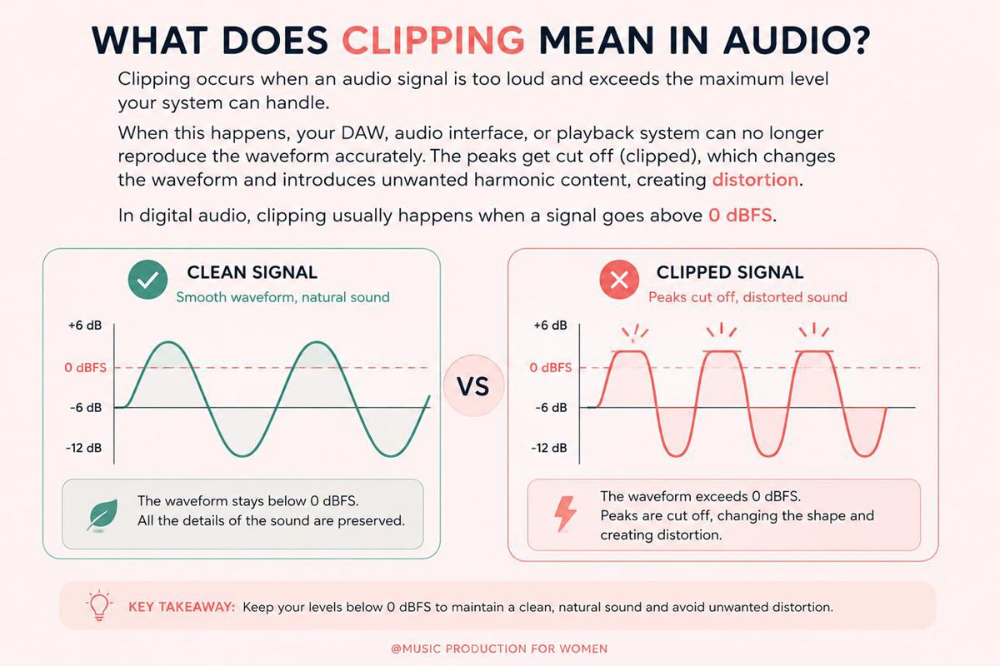
削波会产生明显失真。
所以不能简单地认为增益越高声音越清晰。
3. RMS：计算声音能量
RMS 是 Root Mean Square，均方根。
常用于计算音频信号的有效幅度。
代码：
#include <math.h>
#include <stdint.h>
float audio_rms(
const int16_t *samples,
int count
)
{
double sum = 0;
for (int i = 0; i < count; i++) {
double value = samples[i];
sum += value * value;
}
return sqrt(sum / count);
}RMS 可以用于：
- 音量表；
- 声音强度监测；
- VAD 初步判断；
- 音频信号分析。
4. VAD：判断是否有人说话
VAD 是 Voice Activity Detection。
基本思路：
麦克风采集
↓
计算 RMS
↓
与阈值比较
↓
是否存在有效声音？
/ \
是 否
↓ ↓
标记语音 标记静音简单能量阈值只能判断声音强弱，并不能可靠识别语音。
真实 VAD 还可能需要：
- 背景噪声估计；
- 频段能量；
- 自适应阈值；
- 语音特征；
- 神经网络模型。
5. FFT：分析声音频率
FFT 是 Fast Fourier Transform。
它把时域信号转换成频域信息。
例如：
- 低频：声音中的低频成分；
- 中频：语音主体频率成分；
- 高频：较高频率的声音成分。
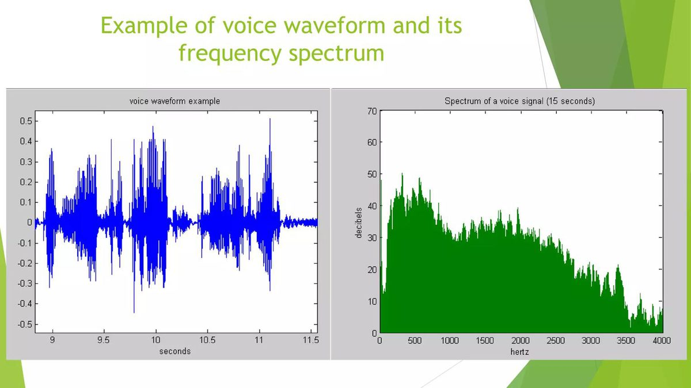
ESP32-S3 可以通过轻量级 FFT 算法进行实时频谱分析。
常见选择：
- ESP-DSP；
- KissFFT；
- 自己实现的定点 FFT。
官方资料：
九、音频缓冲区：为什么录音容易出现爆音和丢帧？
这是实际开发中很容易遇到的问题。
假设：
- I2S 每秒采集 32000 字节；
- 音频任务负责读取；
- 网络任务负责上传。
如果网络突然变慢，可能出现：
- 音频缓冲区堆积；
- DMA 缓冲区溢出；
- 音频丢失；
- 播放出现爆音；
- 延迟不断增加。
1. 推荐的音频缓冲架构
2. 为什么推荐双缓冲？
假设有两个缓冲区：
Buffer A：DMA 正在写入
Buffer B：CPU 正在处理当 A 写满后：
Buffer A：CPU 开始处理
Buffer B：DMA 开始写入两个缓冲区交替使用。
这样可以减少采集和处理之间的相互等待。
但必须明确缓冲区所有权，不能让 CPU 读取 DMA 正在修改的数据。
3. 音频缓冲区大小如何计算？
假设：
- 16kHz；
- 16bit；
- 单声道；
- 每次处理 20ms。
采样数量：
数据大小：
因此每个 20ms 音频块需要 640 字节。
这也是语音识别和实时语音通信中常见的数据分块思路。
十、FreeRTOS：音频系统如何划分任务？
对于普通版 XIAO ESP32S3，建议把音频系统划分为独立任务。
| 任务 | 主要职责 | 设计重点 |
|---|---|---|
| Audio Capture | I2S 采集 | 及时读取 |
| Audio Process | DSP 处理 | 控制处理延迟 |
| Audio Playback | I2S 播放 | 防止欠载 |
| Network | Wi-Fi 传输 | 允许超时 |
| Monitor | 监控 | 检查缓冲区和内存 |
1. 任务间的数据流
Audio Capture
↓
PCM Ring Buffer
↓
Audio Process
↓
Processed PCM
↓
┌────┴────┐
↓ ↓
Playback Network2. 为什么不能在采集任务中直接执行 HTTP？
因为网络传输可能发生阻塞。
例如：
while (1) {
i2s_channel_read(...);
http_post_audio(...);
}如果 HTTP 请求等待 200ms，那么连续采集任务就可能错过大量音频数据。
正确设计：
采集任务：负责采集
处理任务：负责处理
网络任务：负责上传每个任务各司其职。
3. 监控音频系统
建议监控：
printf("Free heap: %u\n",
(unsigned)esp_get_free_heap_size());
printf("Minimum free heap: %u\n",
(unsigned)esp_get_minimum_free_heap_size());同时监控：
- I2S 读取错误；
- DMA 缓冲区异常；
- PCM 队列积压；
- 音频丢帧次数；
- 任务栈余量；
- 网络传输延迟。
十一、Wi-Fi 音频传输：让电脑实时听到 XIAO 采集的声音
现在把音频和网络结合起来。
假设你希望在 Mac 上实时听到 XIAO ESP32S3 麦克风采集的声音。
推荐先从局域网 UDP 或 WebSocket 音频传输开始。
1. 系统架构
2. 为什么不建议直接发送每个采样值？
假设使用：
- 16kHz；
- 16bit；
- 单声道。
每秒需要传输 32KB。
如果每次只发送一个采样值，就会产生大量网络数据包和协议开销。
因此建议将数据分块。
例如每 20ms 发送一包：
每包 640 Bytes PCM数据包可以增加：
设备 ID
序列号
采样时间戳
采样率
声道数
PCM 数据这样电脑可以识别数据格式，并检测是否丢包。
3. UDP 和 WebSocket 如何选择？
| 对比 | UDP | WebSocket |
|---|---|---|
| 传输延迟 | 通常较低 | 有 TCP 可靠传输开销 |
| 是否保证到达 | 否 | TCP 提供可靠字节流 |
| 是否保证顺序 | 否 | 是 |
| 协议复杂度 | 需要自行设计 | 较容易使用 |
| 适合 | 实时音频实验 | 语音数据和控制通信 |
初学阶段建议：
先使用 WebSocket 完成稳定的数据传输，再研究 UDP 的实时性优化。
十二、AEC、NS 和 AGC：智能语音设备的三大关键技术
如果你以后想制作智能语音终端，这三个技术一定要了解。
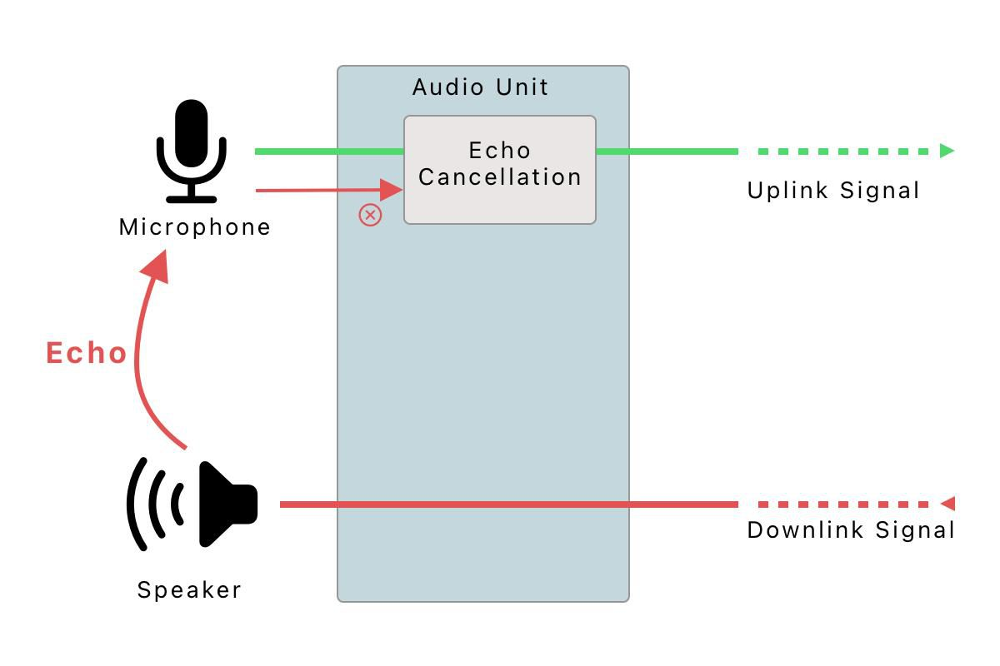
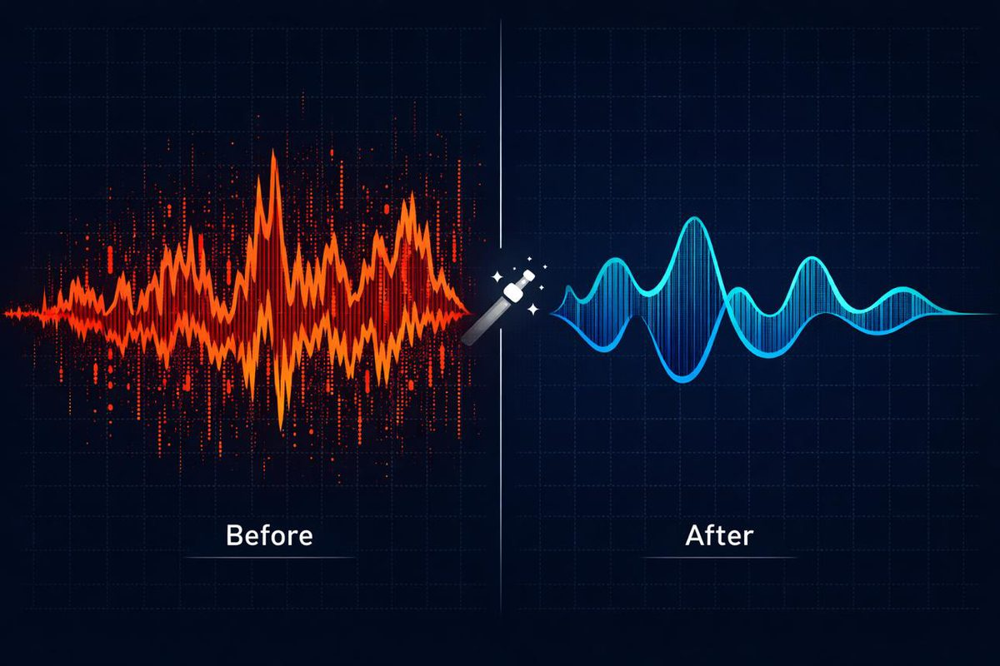
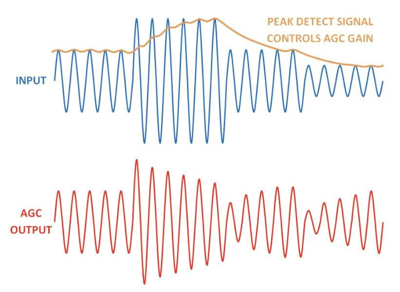
这些技术在智能音箱、语音助手和远场语音终端中非常重要。
ESP32-S3 可以运行部分轻量级音频算法，但复杂 AEC、NS、AGC 是否能够实时运行，需要结合算法复杂度、采样率、CPU 负载和内存实测。
十三、实战项目：制作一台 XIAO ESP32S3 网络语音终端
这是建议你完成的第一个综合音频项目。
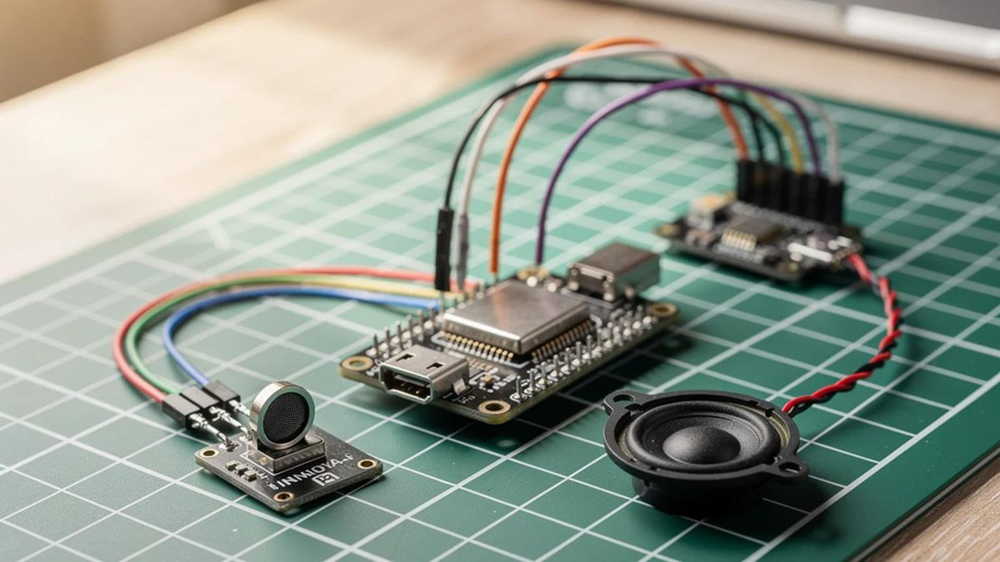
第一阶段：本地录音
硬件：
- XIAO ESP32S3；
- INMP441；
- USB 连接 Mac。
目标：
- 初始化 I2S。
- 采集 PCM。
- 输出原始数据。
- 计算 RMS。
- 保存 PCM 文件。
- 在电脑上播放录音。
第二阶段：本地播放
增加：
- MAX98357A；
- 4Ω 或 8Ω 扬声器，按功放模块规格选择。
目标：
- 生成 PCM 测试数据。
- I2S TX 输出。
- 数字功放播放。
- 调节音量。
- 测试连续播放稳定性。
第三阶段：Wi-Fi 音频传输
目标：
- 连接 Wi-Fi。
- 分块发送 PCM。
- Mac 接收 PCM。
- 检测丢包。
- 实时播放。
- 统计延迟。
第四阶段：智能语音处理
目标：
- VAD 检测语音。
- 静音时停止上传音频。
- 语音数据发送到服务器。
- 服务器进行语音识别。
- 接收文字或语音回复。
- XIAO 通过扬声器播放。
十四、推荐的音频工程目录
在现有 XIAO-ESP32S3-Projects 中，建议单独建立：
projects/
└── audio_terminal/
│
├── main/
│ └── app_main.c
│
├── components/
│ ├── audio_bsp/
│ │ ├── audio_pin_config.h
│ │ └── audio_bsp.c
│ │
│ ├── audio_capture/
│ │ ├── i2s_rx.c
│ │ └── pcm_buffer.c
│ │
│ ├── audio_playback/
│ │ ├── i2s_tx.c
│ │ └── speaker.c
│ │
│ ├── audio_dsp/
│ │ ├── audio_gain.c
│ │ ├── audio_filter.c
│ │ ├── audio_vad.c
│ │ └── audio_fft.c
│ │
│ ├── audio_network/
│ │ ├── audio_udp.c
│ │ └── audio_websocket.c
│ │
│ └── audio_monitor/
│ ├── audio_stats.c
│ └── memory_monitor.c
│
├── docs/
│ ├── wiring.md
│ ├── i2s_architecture.md
│ ├── pcm_format.md
│ └── audio_debug.md
│
└── README.md这里建议先实现本地录音、播放，再添加网络功能。不要一开始就同时调试麦克风、功放、Wi-Fi 和语音识别，否则很难判断问题发生在哪一层。
十五、给 Codex 的本课开发任务
- 普通版 XIAO ESP32S3。
- INMP441 数字麦克风。
- MAX98357A 数字功放。
- ESP-IDF 新版 I2S API。
- PCM 数据转换。
- RMS、增益和滤波。
- FreeRTOS 音频任务。
- 双缓冲。
- Wi-Fi 音频传输。
十六、本课学习验收
十七、下一课：ESP32-S3 摄像头、图像处理与视觉系统
第十四课：摄像头驱动、图像采集与计算机视觉
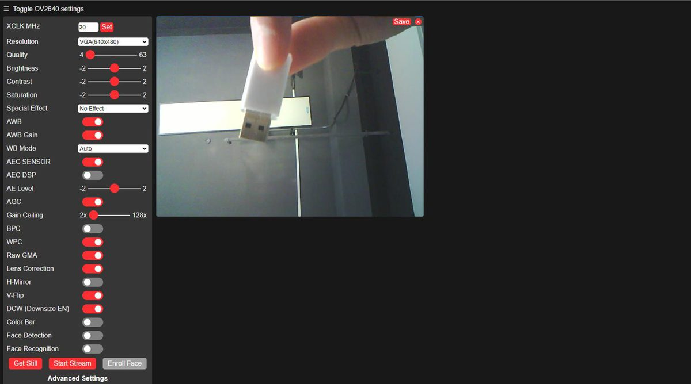
- 摄像头 CMOS 图像传感器原理。
- OV2640、OV3660 摄像头。
- SCCB 摄像头配置总线。
- DVP 并行数据接口。
- XCLK、PCLK、VSYNC、HREF。
- ESP32-S3 LCD_CAM 控制器。
- 摄像头 DMA 采集。
- RGB565、YUV422、JPEG 格式。
- PSRAM 图像帧缓冲。
- JPEG 压缩与解码。
- HTTP 图片上传和 MJPEG 视频流。
- 图像裁剪、缩放和灰度处理。
- 摄像头与 Wi-Fi 的资源调度。
这里有一个硬件区别需要提前明确：
普通版 XIAO ESP32S3 并不自带 Sense 版的摄像头接口配置。 下一课会以普通版为主，研究外接摄像头所需的硬件接口、电路和引脚规划，不能直接照搬 XIAO ESP32S3 Sense 的接线方案。
官方参考：
本阶段最值得完成的目标： 先用普通版 XIAO ESP32S3 + INMP441 + MAX98357A 做出真正能够录音和播放的设备。完成后，再加入 Wi-Fi、VAD 和语音识别。这样你就真正掌握了一条完整的嵌入式数字音频开发链路。